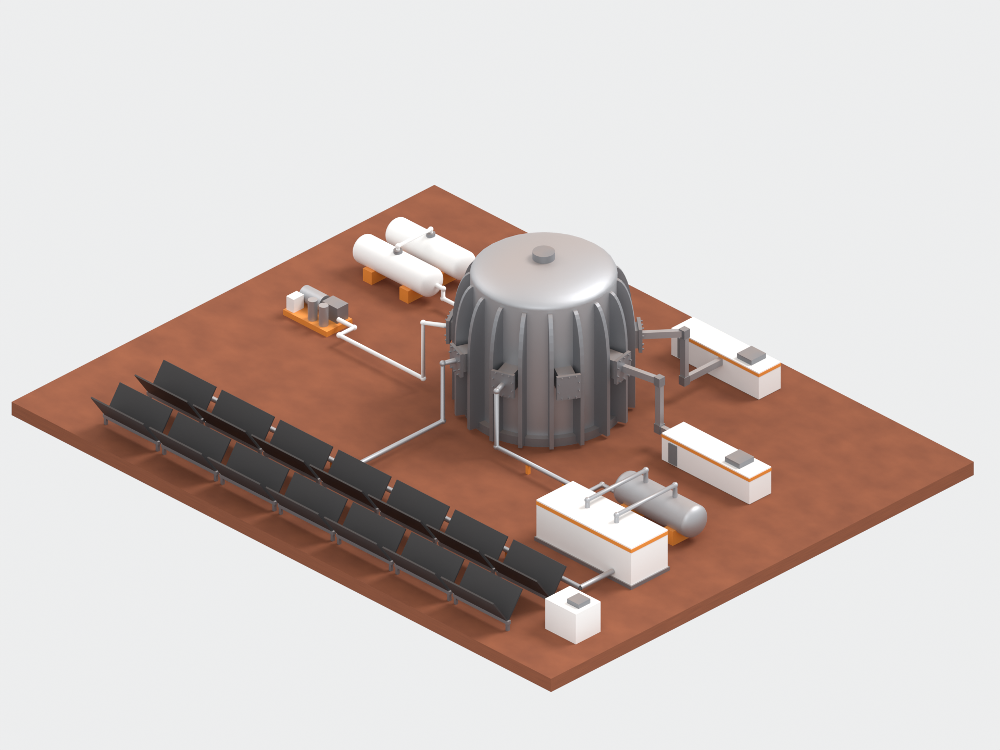
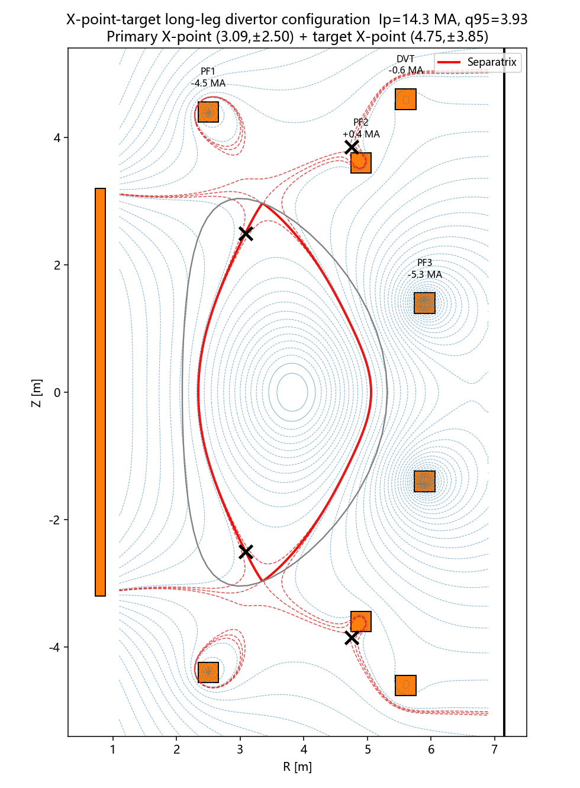
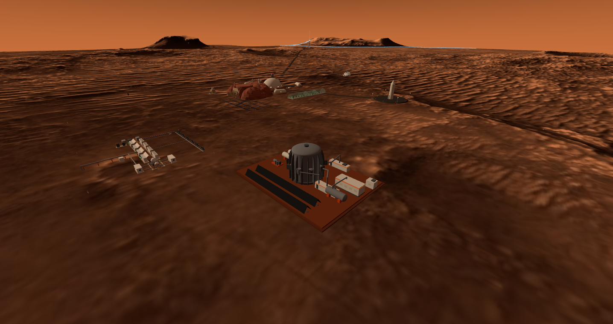
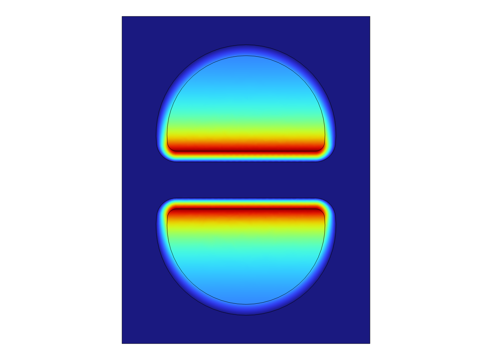
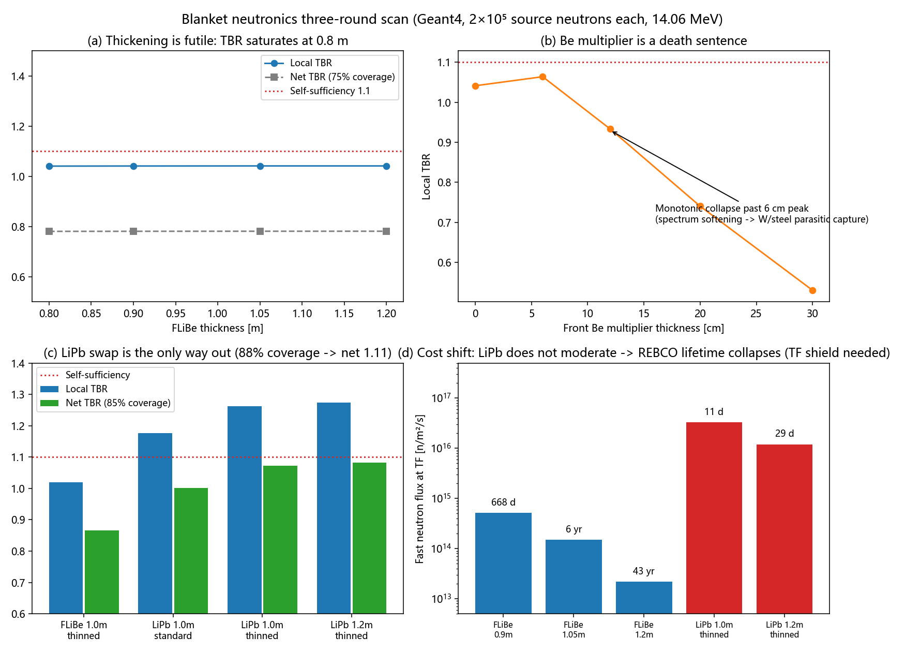

Full-scale Blender model: cryostat Ø14.3 m · 18 D-shaped TF ribs · Mars site

FreeGS flux-surface equilibrium · long-leg divertor configuration

In-engine: the plant and its auxiliary radiators, mid-afternoon

COMSOL 3-D magnet |B| slice — full-field check of the coil system

Geant4 blanket neutronics, 3-round scan: TBR · Be multiplier · LiPb swap (14.06 MeV source neutrons, 18 runs)
Power ledger975 MWth × sCO₂ ~40% = 390 MWe · the remaining 585 MW goes to the north radiator field — the two assets cross-check each other
📐 PhysicsFreeGS equilibrium + 1.5-D transport + two-point divertor model (Lengyel impurity radiation)
📐 Safetyquench · disruption VDE · tritium cycle · ISRU coupling — 19 scripts + 28 figures archived, 8 reports
🔥 3-D fieldsCOMSOL magnet |B| full-field ×2 studies · HFSS LHCD waveguide full-wave ×1
📐 NeutronicsGeant4 transport, 18 runs: blanket deposition / shield dose — the Martian night outside the cryostat is safe
In town62 m platform · 18 D-ribs + 9 ports + 2 LHCD halls · 8 knowledge cards (distance-LOD pop-ups)